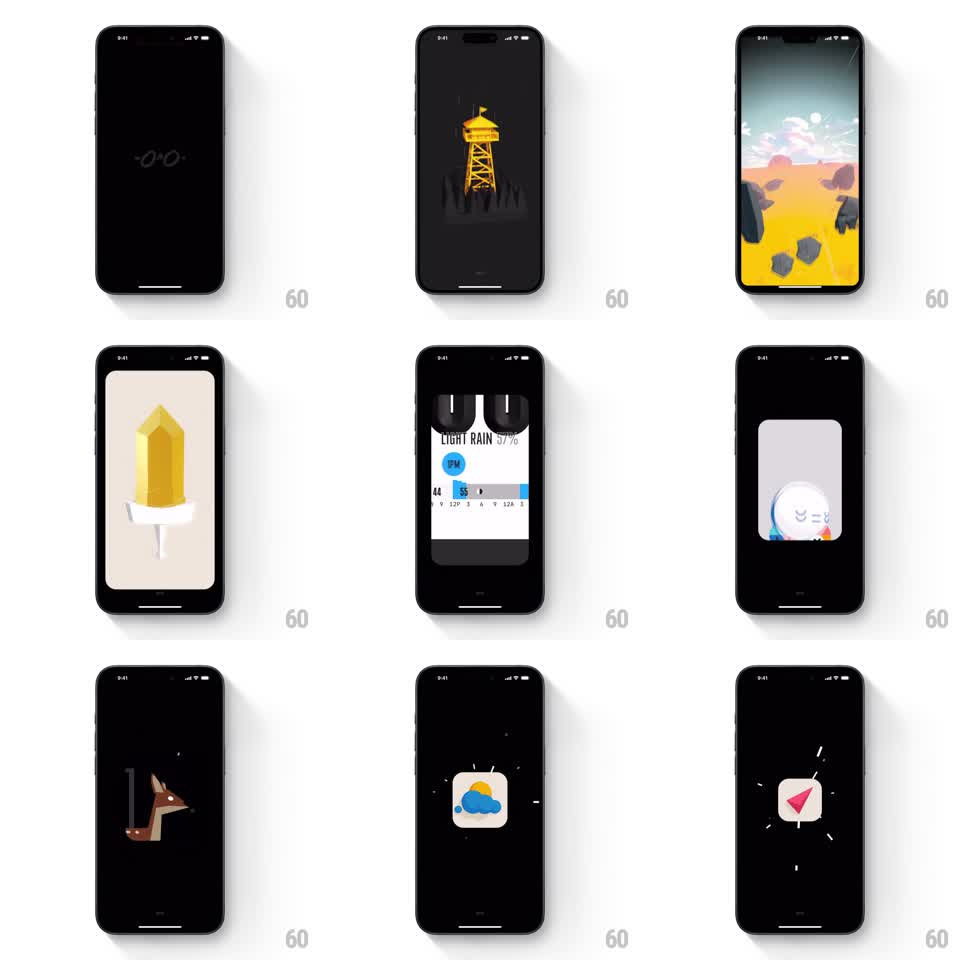

Media
Frame-by-frame

Rebuild this animation 1:1: Not Boring's apps splash - a rapid-fire showcase cycling through the app's family of products, each announced by a bold illustration or UI glimpse with hard, stylish transitions.

Rebuild this animation 1:1: Not Boring's apps splash - a rapid-fire showcase cycling through the app's family of products, each announced by a bold illustration or UI glimpse with hard, stylish transitions.
## Integration
Integration: stack-agnostic spec - springs given as stiffness/damping, timed motions as duration + curve; map every value to your framework and animation library of choice.
## Scene
Black stage. The sequence flashes through the Not Boring universe: the "-O+O-" mark, "HABITS" under a yellow water-tower illustration, a low-poly desert scene, a yellow crystal popsicle, the Weather app UI ("LIGHT RAIN 57%" with its slider), a small character card, an origami fox, and finally the weather and compass app icons.
## Motion spec
Pattern: rapid-fire product montage.
- Each beat lasts ~350-500ms. Scenes cut or whip-transition: scale-punch in (1.08 to 1.0, 150ms), slide-wipe, or quick 3D flip - every beat uses a different transition flavor.
- Illustrations enter with a springy pop (scale 0.85 to 1, spring ~400/24) and exit fast (scale 1 to 1.1 + fade, 120ms).
- The product names set in the app's signature heavy condensed type, tracking in tight (letter-spacing animates from +0.1em to 0, 200ms).
- The app-icon beats bounce like home-screen icons being tapped (scale dip to 0.9 and spring back, ~450/20).
- Final beat holds on the last icon (~600ms) before crossfading into the app (250ms).
## Calibration
- Pace is everything: total sequence ~4s; any beat over 600ms drags.
- Transitions alternate directions so the montage feels choreographed, not a slideshow.
## Reduced motion
Single crossfade through 2 key frames into the app.
## Don't miss
- Each product keeps its own art direction (paper-cut illustration, low-poly 3D, print UI) - do not unify the styles.
- The black background is constant; all energy comes from the content beats.